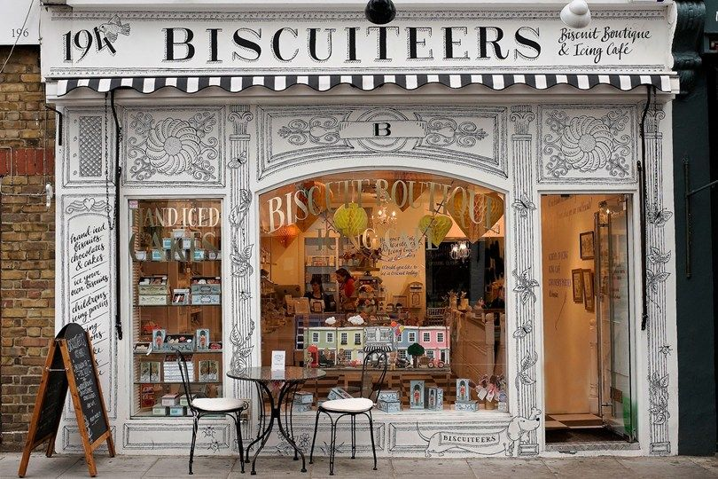

SOBRE NOSOTROS

Comencé como ayudante de pastelería siendo la única mujer en una cocina de hombres, y poco a poco me fui ganando mi lugar a fuerza de sacrificio y compromiso, quizás porque desde temprano siempre tuve algo que a esa edad no es tan común: un foco. Fueron cuatro años de duro trabajo recorriendo los mejores restaurantes del mundo, hasta que un día comence por mi propia cuenta.